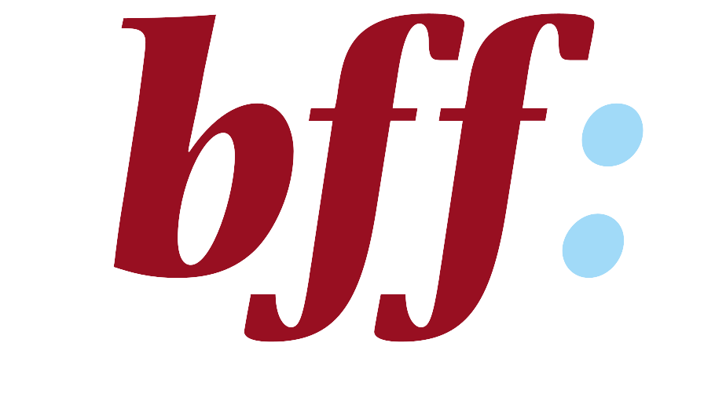

Три кроки: Як у Німеччині протидіють домашньому насильству і чому це нас стосується?
«Я відчула, що я теж людина», — Олена, постраждала та врятована від домашнього насильства.
Автор: Марія Тарасенко
Пролог
За даними Бундестагу, кількість випадків домашнього насильства у
Федеративній республіці Німеччина у 2022 році сягнула 240.547, що на 8,4 відсотки більше, ніж у попередньому, 2021 році. Від 24 лютого 2021 року і до сьогодні тут опинилося близько двох мільйонів громадян України, яким було надано тимчасовий захист за параграфом 24 «Про перебування іноземних громадян». Маємо багато цифр, чи не так? Але як повʼязані ці двісті сорок тисяч та ці два мільйони не зможе вирахувати жоден компʼютер: брак даних. Йдеться не тільки про те, скільки українських постраждалих поповнило статистику випадків домашнього насильства і не про статистику взагалі — про людей, які опинилися в іншій країні та звернулися про допомогу тут. Для людей, які не знають мови або куди можна звернутися.
«Багато родин виїхали за кордон, часто, попри все, і сімʼї з чоловіками. Насильство, яке траплялося ще в Україні, продовжується, але тут жінка не знає, куди звернутися; ще більшою проблемою є мовний барʼєр. Невідомо, чи говорять працівники цієї установи українською чи російською», — пояснює Альона Кривуляк, директорка департаменту Національних гарячих ліній та соціальної допомоги Громадської організації «Ла Страда-Україна».

«Часто до нас звертаються з проблемою, яказʼявилася ще в Україні, але іноді стрес стає фактором, який призводить до появи інцидентів домашнього насильства вже в Німеччині», — погодилася би Клаудія Майз, працівниця Frauenberatung (консультаційний центр для жінок) у місті Геттінген.
Із накопиченням досвіду німецьких державних служб та появою історій постраждалих громадянок України, ми можемо уявити собі мережу, яка протидіє та запобігає домашньому насильству. Чому і чого не варто боятися? Розбираємося завдяки історії постраждалої Олени та коментарям працівників соціальних служб Нижньої Саксонії. Куди звернутися? Відповідаємо ґрунтовно та поступово — від найдоступнішого до такого, що потенційно може змінити ваше життя.
Розділ перший: телефон допомоги
Варто зробити зробити кілька кроків у часі і познайомитися з механізмом захисту постраждалих від домашнього насильства, який був напрацьований у Німеччині за останні роки. Восени 2017 року тут було ратифіковано Конвенцію Ради Європи про запобігання насильству стосовно жінок та домашньому насильству та боротьбу із цими явищами, на початку 2018 року вона почала діяти. Поміж іншого, це означає, що Федеративна республіка Німеччина має виконувати положення щодо захисту постраждалих від домашнього насильства, які передбачені міжнародним документом. Він охоплює чотири основні напрямки: попередження домашнього насильства, захист та підтримка постраждалих, судове переслідування порушників та комплексна політика. В межах цього матеріалу сфокусуємо увагу на тому, яких заходів вживає Німеччина стосовно другого фактору боротьби з проблемою: тобто куди може звернутися постраждала особа та яку допомогу вона може отримати.
Найпершою та найдоступнішою опцією є телефон допомоги. У Німеччині він існує назвою „Gewalt gegen Frauen“ (насильство проти жінок) та під номером 116 016. Відповіді на найпоширеніші питання наведені на головній сторінці цього сайту. Не менш важливо, що ця опція допомоги при домашньому насильстві може функціонувати абсолютно анонімно, а також доступна вісімнадцятьма мовами, серед яких є і українська.
Прес-служба організації повідомляє, що протягом 2022 року було проведено 184 консультації українською мовою. Голова телефону допомоги «Gewalt gegen Frauen» Петра Зохтінг пояснює, що тільки мовний показник вказує на те, скільки українок звернулося про допомогу.
«Наша діяльність базується на довірі та анонімності, тому ми не питаємо про громадянство. Якщо особа, яка просить про консультацію, не повідомляє про свою національність, ми цього не знаємо».
Проте працівники зазначають, що часто українці звертаються на телефон допомоги у випадках насильства, потребуючи насправді консультації у питаннях, що стосуються біженства. Попри те, що оператори телефону допомоги мають спеціальні навички для роботи з досвідом біженства, осабам, які не є постраждалими від домашнього насильства, надають контакти інших організацій. У той же час, Вікторія Кутілова, заступниця директора київського міського центру гендерної рівності та протидії насильству розповідає, що багато постраждалих телефонує з-за кордону та просить про допомогу в Україні. Але чому відбувається так? Лише через непоінформованість?
«Подекуди постраждалі жінки бояться набирати 110 або 112 в іншій країні, бо кривдники часто маніпулюють тим, що: „Ти зараз звернешся — і що? Ти тут ніхто, ти в чужій країні, тебе депортують, і куди ти поїдеш, в Маріуполь?“», — пояснює Альона Кривуляк.
Часто наявний і страх того, що Jugendamt (служба у справах дітей) може забрати дітей або позбавити постраждалу батьківських прав.
Такі застарілі уявлення часто стримують жінок від рішучих дій.
«Насправді вони (працівники Jugendamt) хочуть, щоб діти залишилися в родині: як у німецькій, так і в українській. Попри те, що і німці, і українці, мають такі страхи, питання про те, щоб забрати дітей постане лише у випадку їхнього систематичного побиття або власного бажання цих дітей», — «доповнює» Клаудія Майз, працівниця Frauenberatung міста Геттінген.
Слід додати, що про депортацію особи у регіон, де триває війна може йтися тільки у випадку вчинення цією особою важкого злочину: зґвалтування або вбивства.
Телефон допомоги — це справді найдоступніший крок, на який може наважитися постраждала, навіть у випадку, коли повідомити про інцидент у поліцію або вжити рішучих заходів вона поки не готова. Досить швидко зʼясовується, що телефонна служба дійсно працює так, як обіцяють. Тут немає ніякого: «Ваш дзвінок дуже важливий для нас, зачекайте на лінії». Оператори відповідають протягом кількох секунд і так само швидко до розмови приєднується перекладач. Немає потреби поспішати чи повідомляти виключно факти, аби не затримувати працівників. Ви також не зобовʼязані дотримуватися порад, які були надані або звертатися будь-куди ще.
Голова служби телефону допомоги Петра Зохтінг пояснює: «Ми маємо три ключові задачі: ми проводимо першу консультацію, ми проводимо кризові інтервенції, за бажанням жінки ми перенаправляємо її для довготривалої підтримки у напрямку, залежному від місця проживання».
Поняття «кризова інтервенція» не має очевидної інструкції. За словами пані Петри, дуже важливим є те, що тут не відбувається ніяких автоматичних інформувань поліції або інших організацій. Якщо жінка про це не просить, то гучне слово «втручання» означає тільки те, що постраждалу спробують стабілізувати психологічно. У ситуації, коли особа повідомляє про своє місцезнаходження та просить про більш практичну допомогу, працівники мають право викликати поліцію за місцем, де відбувається насильство.
Глобально концепція такої організації полягає в тому, щоб надавати інформацію, а не поради. «Готові рішення», схожі на ультиматуми, створюють додатковий тиск на постраждалу, і тому, їй ніколи не скажуть: «Ви маєте відокремитися від кривдника».
«Ми не відслідковуємо подальший шлях жінки і не знаємо, яких заходів вона вживає після цієї консультації. Ми не ведемо ніяку статистику та не збираємо особисті дані. Це «перший крок» назовні, де жінка розповідає, що сталося і отримує інформацію», — каже пані Петра на завершення.
Розділ другий: притулок
Згідно зі Конвенцію Ради Європи про запобігання насильству стосовно жінок та домашньому насильству та боротьбу із цими явищами, держава має пропонувати постраждалим захист не тільки від фізичного і сексуального, але і психологічного та економічного насильства, безпечний простір, куди можна потрапити швидко і безкоштовно і де можна перебувати від трьох до шести місяців. У Німеччині такі притулки називаються Frauenhäuser (далі — «жіночі будинки»). Вони і є основним напрямком допомоги постраждалим, адже першим кроком у кожній історії має бути забезпечення такій особі житла, недоступного кривдникові. З цієї причини адреси жіночих будинків залишаються невідомими: за таких умов постраждала особа може не боятися переслідування (екс-) партнера. Але як потрапити у такий притулок?
Наочність та доступність сайту ZIF (інформаційна платформа незалежних жіночих будинків) є неочікуваною. Перш за все, платформа пропонує інструкцію для користування. Нижче можна знайти мапу з приблизними локаціями прихистків — при наведенні миші на позначку зʼявляються контакти притулку. Крім того, «жіночі будинки» відмічені різними кольорами залежно від того, чи може будинок наразі прийняти постраждалу, чи може запропонувати тимчасовий прихисток з подальшим перенаправленням в інший притулок або ж доступна лише телефонна консультація. Також сайт пропонує фільтр пошуку, де можна обрати притулок за необхідними параметрами: федеральна земля і радіус пошуку, наявність у вас дітей та домашніх улюбленців, мови, якими володіють співробітники притулку тощо. Зовнішньо це дуже схоже на сайт букінгу, де теж потрібно обрати кількість осіб та додаткові послуги. Виглядає дуже просто?
[Буде фото та відео того, як це працює: буквально наведення миші на різні будинки. Додаватися матеріали будуть поступово, після кожного відповідного речення]
Для всіх держав, які ратифікували Стамбульською конвенцією, норми спільні: на 10000 населення передбачається хоча б одне місце у притулку, аби задовольнити потреби громадян. За словами правозахисниці у сфері попередження насильства щодо жінок Йоханни Неллес у інтерв’ю der Spiegel: «У Німеччині є близько 5086 місць у притулках для жінок. Отже, існує дефіцит; жодна федеральна земля не досягає поставленої мети». Чи може бути так, що постраждала не буде прийнята у жодний притулок?
Особиста розмова з координаторкою «жіночого будинку» у місті Вольфсбург Сандрою Бетц допомогла зʼясувати багато деталей.
Працівниця притулку зазначила: «Ми завжди знаходимо рішення. Якщо наразі ми не можемо запропонувати постраждалій житло, ми шукаємо для неї притулок в інших установах. Жінка у будь-якому разі не має залишатися з автором насильства».
Про те, як все відбувається не на папері, а в житті, розповідає Олена (імʼя було змінено), постраждала від домашнього насильства, яка наразі перебуває у «жіночому будинку»:
«Сусіди казали, що не має бути постійних криків, робили зауваження. Моя донька, яка ще до війни приїхала сюди та вийшла заміж, теж казала, що так не можна — мовляв, приїде відповідна служба, візьметься за нас. Потім стався випадок, коли мені довелося викликати поліцію на чоловіка, бо він був у неадекватному стані. Поліція одразу заборонила йому перебувати у нашій квартирі протягом пʼяти днів. Ось тоді почалася ця історія: оскільки ми маємо дітей, нашу справу одразу передали в Jugendamt. До нас прийшли звідти, але в перший раз нам з чоловіком запропонували помиритися — поставилися лояльно».
У Німеччині дзвінок у поліцію означає, що організації, про які йде мова у цьому матеріалі, самі отримують контакти жінки і можуть надіслати їй лист українською, де буде запропонована допомога або консультація. Як і у випадку Олени, сусіди часто звертають увагу на ситуації, які потенційно сигналізують про насильство — та рекомендують звернутися у поліцію. Подекуди вони роблять це самі. Про таку можливість розвитку подій знала і Олена, тому вона зрозуміла, що має взяти справу у свої руки.
«Потім все сталося знову, і працівниця оцінила стан чоловіка у тверезому стані як такий, що згубно впливає на дітей. Їх пізніше багато запитували про те, як поводиться тато. Після цього нам виділили сімейну помічницю, яка приходила до нас кілька разів на тиждень. Після трьох місяців вона запропонувала мені та дітям відокремитися від чоловіка, і я погодилася тимчасово переїхати сюди, у Frauenhaus, де нам згодом знайшли місце».
Що далі? «Жіночі будинки» — це не одна конкретна послуга. Це робота з постраждалою протягом всього періоду, що вона знаходиться у притулку і навіть не тільки. З історій координаторок притулків стає зрозуміло: тут усвідомлюють, як важко почати повністю самостійне життя. Особливість психологічного насильства полягає в знищенні гідності людини, її самоцінності, її віри в себе.На це сподівається і сімʼя Олени.
У «жіночому будинку» кажуть: «Ти все зможеш сама». Але перші кроки, каже Сандра Бетц, працівники притулку роблять разом з постраждалою. У багатьох випадках, особа ніколи не мала власного доходу, а відповідно, і банківського рахунку: «Отже, ми йдемо разом в банк, відкриваємо рахунок, потім звертаємося до Джоб Центру (центр зайнятості), аби отримати соціальні виплати, займаємося медичним страхуванням. Наша кінцева ціль — знайти постраждалій та її дітям власну квартиру».
«Це наша першочергова мета, — пояснює вона, — адже тут, у притулку, не можна жити вічно. Допомагають з цим, допомагають заповнити численні папери, зокрема для Джоб Центру. Зараз очікуємо, поки все вирішиться: або ми знайдемо житло, або чоловік залишить нам квартиру. Тут нам безпечно та комфортно: є своя кухня та санвузол, є спеціальні ігрові кімнати для дітей, є розвивальні книжки та ігри. Я знаю, що мій чоловік не може просто прийти до мене та дітей проти нашого бажання».
Але на питання, чи бувають «нещасливі» випадки, працівники відповідають, що іноді постраждала повертається до свого кривдника або навіть знаходить нового. У випадку з телефоном допомоги, особа сама вирішує, якою інформацією поділитися — за бажанням, можна навіть змінити або не називати своє імʼя. У притулки ти потрапляєш собою, у своєму тілі, зі своїми болями та ранами. Тут тобі лікують крила, але тільки ти можеш прийняти рішення розправити їх. Для цього часто потрібні місяці та роки психотерапії.
Розділ третій: діалог
Поговоримо про ще одну можливість отримати допомогу. Співпраця міграційного центру та різноманітних організацій, що консультують українців у багатьох сферах — це гнучка та розумна мережа, яка, здається, готова мʼяко підстрахувати осіб, які роблять перші непевні кроки в Німеччині. «Цього разу ми готові набагато краще, ніж, на жаль, були у випадку з Сирією», — кажуть у німецьких соціальних службах.
Від початку повномасштабного вторгнення росії на територію України в усіх Rathäuser (регіональні владні органи) було вдосталь українськомовних постерів і флаєрів для жінок та дітей / молоді, що постраждали від домашнього насильства. Це, так би мовити, стартовий пакет; інформування про те, що можливість отримати допомогу є. Українки почали користуватися нею не одразу, але з часом, повідомляють працівники Frauenberatung (консультаційні центри для жінок), їх стає більше і більше.
Йдеться про центр консультування, який можна знайти в своєму регіоні, але також і цілу систему понять та принципів. Основними напрямками діяльності тут є психологічна та правова допомога. Залежно від можливостей кожної конкретної установи, можуть бути представлені: групова терапія, робота з психологом або терапевтом, сімейна терапія, правова консультація, різні тематичні заходи. На кого це спрямовано? На жінок, які прагнуть пропрацювати травму сексуального та інших видів насильства, що знаходяться в активній фазі або були пережиті в минулому. Окремою послугою є так звана «кризова інтервенція», яка передбачає консультування жінки у важких, зокрема психологічно, ситуаціях. З організаційної точки зору, кожен такий телефон допомоги працює з постраждалими тільки у своєму регіоні, і саме за таким принципом відбувається фінансування консультаційних центрів.
У цьому розділі ми озброєні знанням, що з психологами «важко». Працівники жіночих будинків згадували: так, з розумінням, що робити, куди бігти, що буде з дітьми, а раптом він зʼявиться знову, а якщо немає власного доходу — допоможуть. Але чи запитають, де болить… Працівниця Frauenberatung у місті Геттінген Клаудія Майз запевняє, що так. Коли постраждала особа звертається за телефоном центру, їй можуть призначити консультацію онлайн або ж особисто, аби зʼясувати напрямки майбутньої роботи. Так само в телефонному або в очному режимі до розмови може долучитися перекладачка з будь-якої мови. У міністерстві Нижньої Саксонії існує також відділ „Wörte helfen Frauen“ (Слова допомагають жінкам), який має перекладачів з відповідними кваліфікаціями (словниковий запас).
«Кожній жінці, яка до нас звертається, ми пропонуємо десять безкоштовних консультацій з психологом, — пояснює Клаудія. — Така можливість існує серед інших, які ми забезпечуємо: потрапити до лікарні, висунути звинувачення кривдникові, провести консультацію у міграційному центрі через невизначений статус у Німеччині, отримати допомогу у випадку з залежностями… Крім того, звісно, наша ключова сфера — правове консультування», — пояснює Клаудія Майз.
Постраждалі громадянки України зберігають у сховищі своєї душі різний біль: «стрес після переїзду спричинив насильство у родині», «чоловік почав пити та кривдити не тільки мене, а і дітей», «я пережила зґвалтування через війну, і нікому не можу про це розказати»…
Всі працівники центру консультування, як запевнили мене, мають відповідну освіту, тобто таку, що дозволяє їм професійно надавати психологічну допомогу. Основний напрям такої діяльності — допомогти у випадках гострого болю і стабілізувати стан жінки. Звісно, робота над проблемою на цьому не закінчується, тому коли всі десять безкоштовних консультацій позаду, працівники шукають для постраждалої незалежного психолога або терапевта, і на цьому етапі вона стає у загальну чергу. Тут, як вже було згадано, можна чекати місяцями та роками. Таким чином, окреслимо, що центр консультування для постраждалих від домашнього насильства є службою екстреного реагування, схожою на звичайну швидку допомогу. Тут зупинять кровотечу, нададуть знеболювальне та протизапальне, але подальше терапевтичне лікування лежить поза можливостями швидкої.
«Наші працівники дуже досвідчені: за симптомами постраждалої ми одразу розуміємо, коли йдеться про прояви травматизації, і з самого початку пропонуємо особі терапевтів, які можуть бути корисні у такій ситуації. Звісно, чекати потрібно довго, крім того, не всі наші клієнти володіють німецькою або англійською. У таких випадках ми продовжуємо допомагати жінці навіть після десяти консультацій, хоча і з більшими перервами у часі. Ми не дозволяємо собі відмовити постраждалій, тому що відведені їй десять годин вичерпані», — розповідає Клаудія Майз.
Мережа соціальних служб працює так, що людина може звернутися будь-куди, навіть не за адресою, але її перенаправлять, про неї повідомлять, їй порадять і про неї подбають. На питання, чи буває так, що жінці неможливо допомогти, щоразу лунає відповідь: ми завжди знайдемо шлях. І на цьому шляху будь-які обставини, зокрема фінансова залежність від кривдника, психологічні травми, проблеми з житлом або статусом біженця у Німеччині, незнання мови — це перешкоди, дійсно. Перешкоди, які змушують мережу вдосконалюватися та розвиватися і які ніколи не означають глухий кут.
«Не варто боятися, наважуватися — потрібно, — на моє прохання радить Олена тим, хто читає цей текст. — Щодо іноземної мови… Іноді достатньо одного погляду, і люди у притулку зрозуміють тебе. Буває, тутешня працівниця доторкнеться до плеча, і жінці, яка є постраждалою, вже стає легше. Треба змінюватися, треба наважуватися, тому що це демократична країна, тому що тут цінують кожну людину».